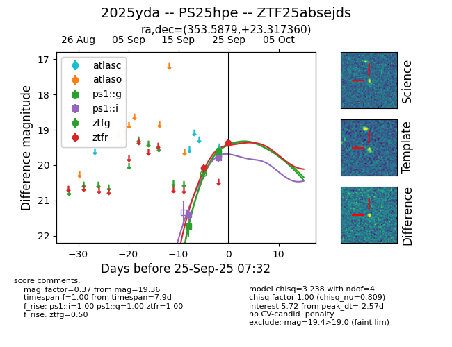
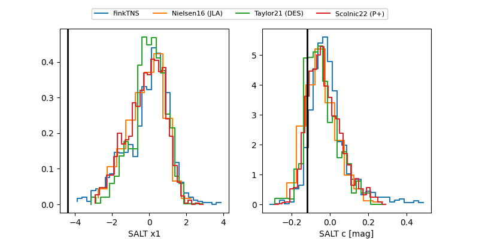

FINK: ZTF25absejds
Lasair: ZTF25absejds
ALeRCE: ZTF25absejds
TNS: 2025yda
YSE: 2025yda
ZTF25absejds (ztf,fink)
2025yda (tns,yse)
PS25hpe (panstarrs)
equatorial (ra, dec) = (353.5879,+23.31736)
galactic (l, b) = (100.8623,-36.22891)


last ps1::g=19.68, ps1::i=19.79, ztfg=19.58, ztfr=19.36
2 ps1::g, 2 ps1::i, 1 ztfg, 2 ztfr detections